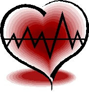

The Silent "Heartbeat"
Amy Peterson
Spring 2012

Evolution is the science of producing the strongest
and most efficient organisms possible. However, it is a slow and
imperfect process—a fact that has driven humans to reach for technology
as the weapon to keep mankind at the top of the food chain amidst the
teeth and claws of the animal kingdom. Recently, one of the most
significant leaps in medicine and technology comes from two seemingly
ordinary men in white lab coats. Dr. Billy Cohn, M.D., and Dr. Bud
Frazier, M.D. have created and successfully implanted the first all
mechanical and pulse-less artificial heart.
Traditionally, the heart is a muscle that pumps
blood through the body to replenish its supply of oxygen and transfer
nutrients throughout the body. Many people require a heart transplant
because their hearts are not pumping as well as they should to keep
them healthy. Others may have a good pump but an irregular heartbeat,
stemming from a problem in the electrical conduction system of the
heart. This system tells the heart to contract once it is full of blood
so that the blood can then be pumped throughout the body. The
electrical system determines the rate, rhythm and sequence of
contraction of the heart muscle (this is what an electrocardiogram,
EKG, monitors). Although there are numerous problems that can require
the necessity of a heart transfer or the presence of a heart pump,
these two reasons are the most common.
Statistics reported by the Texas Medical Center
(TMC) suggests that about 5 million Americans have failing hearts while
there is only around 2,000 donor hearts available. And of those 5
million in need, several hundred thousand have a fifty percent chance
to live longer than a year. Obviously, there is a strong demand for
healthy and transferable hearts with a correspondingly low supply.
Needing a heart does not guarantee a donor either. A potential donor
heart must be compatible with the recipient's immune system to decrease
the chances the new organ being rejected by the body and other
complications such as blood clotting. Dr. Bobby Peterson, M.D.— a
general practitioner with twenty year’s experience—explains that
“tissue rejection and blood clotting are just the physical
consequences” that can occur due to transplants. A patient could also
be required to take up to “three or four medications to prevent
complications in the first place as well as a change in
lifestyle.” A traditional heart transplant does not guarantee the
return of a normal routine—a patient could be faced with taking
medications for the rest of their life.
However, pacemakers and heart pumps have been used
to either partially or completely replace the heart to circumvent some
of these problems for the past fifty years. Unfortunately, even these
methods produce complications as well. Dr. Peterson explains, “A heart
pump would better sidestep the possibility of rejection from the body,
yet mechanical damage inflicted on red blood cells from the rotary
blood pump can set off a clotting cascade throughout the body.” Like in
the case of a heart transplant, medication would be needed every day to
prevent complications—for a pump specifically, blood thinners would
needed daily to prevent strokes and limb-loss stemming from damaged red
blood cells. Also, according to Dr. Frazier, co-creator of the
pulse-less heart and an expert in the field of heart transplants, via
TMC, “Pulse-producing pumps wear out in 18 months to two years […]
because they must pump 100,000 times a day and 35 million times a year
to match the human heart.” A patient would not only need to replace the
pumps every other year by surgery, but it has been documented that the
pulsing motion from the device can also cause discomfort ranging from a
dull ache to measurable pain.
But, the new pulse-less artificial heart does not experience these
difficulties. As explained by TMC, Dr. Frazier and Dr. Cohn’s
artificial heart is composed of two continuous-flow pumps strapped
together, about the size of two D batteries. The left pump drives blood
out of the heart and into the body while the right pump handles the
oxygen rich blood that has returned from its cycle through the vascular
system. The two pumps are powered by a battery pack on the outside of
the body that uses small turbines to provide the continuous flow of
blood. National Public Radio’s (NPR) interview with Dr. Cohn from 2011
explains that many patients to date have undergone the procedure of
having one continuous-flow pump being inserted to assist their failing
hearts, notoriously including Vice President Dick Cheney. This type of
pump is also Frazier’s own creation that he first invented and
implanted in 1988, and has evolved into the modern Heartmate II pump.
Discover Magazine clarifies that unlike other artificial hearts, their
creation has rotors that circulates blood non-stop, and though the
technology and components that went into the new pulse-less heart has
been around for a while, Dr. Frazier and Dr. Cohn were the first to
combine two of them to completely replace a heart. To better understand
this technological journey, imagine being given common nuts and bolts
and then being told to make an engine—one that has not been created
before yet matches everyone’s standards of efficiency. Then try doing
this a second time but now exceeding the status quo. This is akin to
how the continuous-flow artificial heart was made.